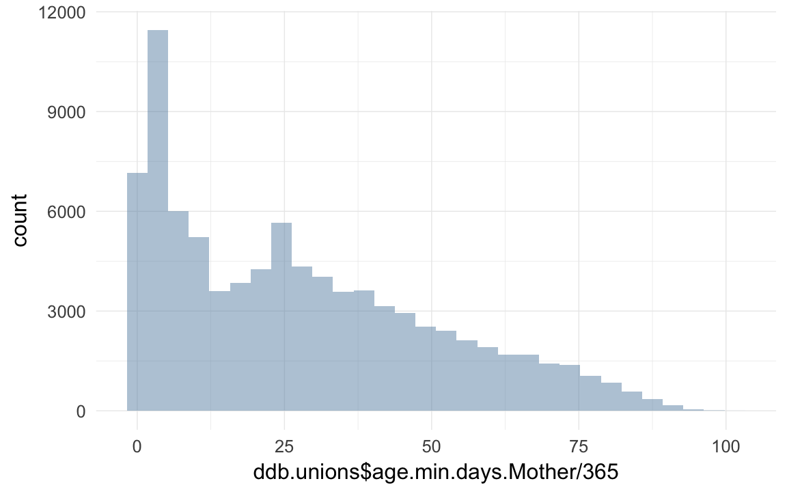
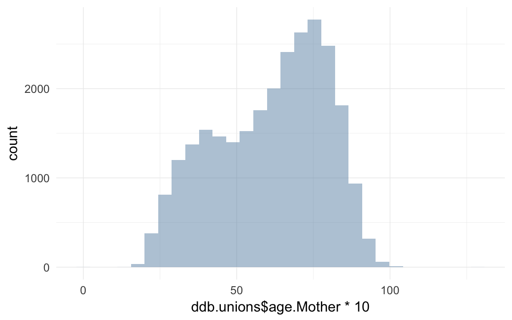
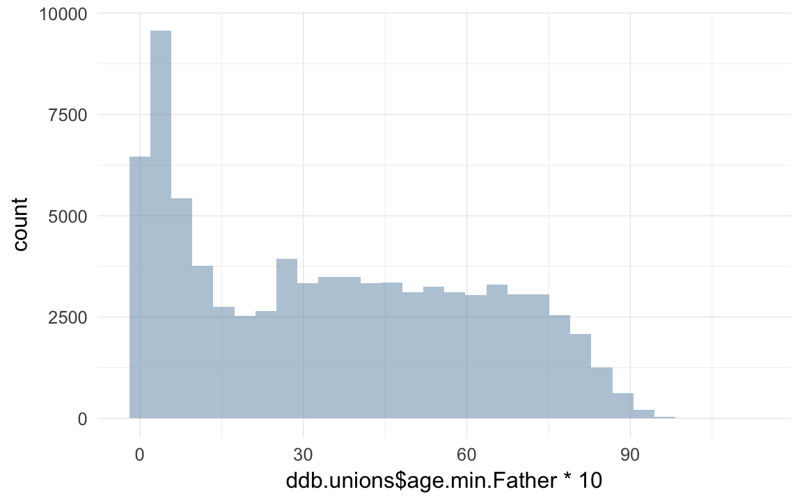
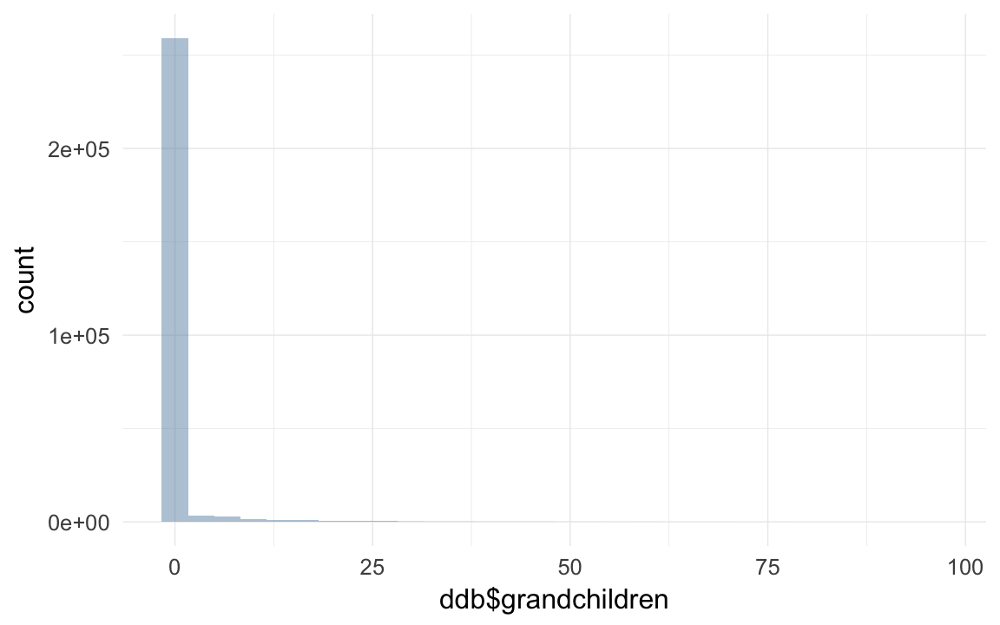
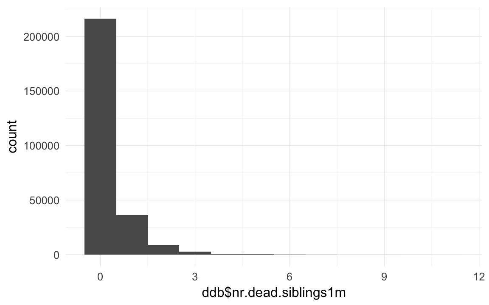
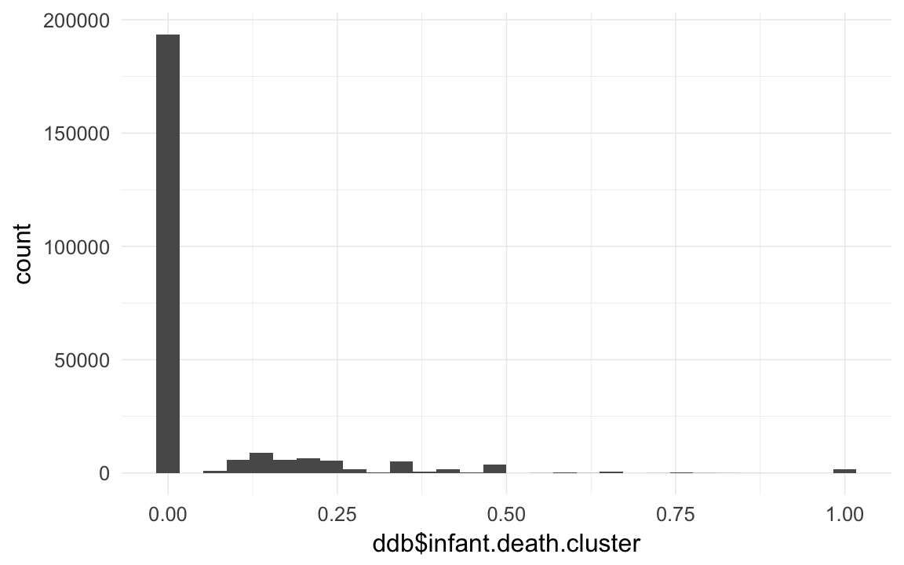

DDB data wrangling
description of data
This data retrieval is a modification of a previous dataset delivered to Kai Willführ in 2012 with contract number K12019. The basic changes from the previous dataset is that all couples are included in the couples file (previously called parents) while only couples with children were included in the earlier data. There are also more parishes included – 12 parishes in the Linköping region (this region was not included in the 2012 dataset) and a couple of new parishes in the Skellefteå region. The Sundsvall region and Northern inland region cover the same parishes as before.
There are also a couple of changes in the Popum database at DDB that results in some differences between the two datasets. The Skellefteå region is now completely linked between parishes in the region, meaning that one individual has the same identity in all parishes he or she has been present in. The other regions are however unlinked or not completely linked, which means that there are separate records in each parish of presence. Another difference is that the death codes have now been updated and conform to the official DDB classification (representing an historical adaptation of ICD10). The presence periods are furthermore better represented in the new version.
loading details
opts_chunk$set(cache=TRUE,tidy=FALSE,autodep=TRUE,dev=c('png','pdf'),fig.width=12,fig.height=7.5,out.width='1440px',out.height='900px')
opts_knit$set(self.contained=F)
source("0__helpers.R")Transforming data
ddb.individuals = read.csv2("data/DDB Sweden/march2015/Children.csv",fileEncoding="latin1")
ddb.unions = read.csv2("data/DDB Sweden/march2015/Couples.csv",fileEncoding="latin1")
names(ddb.individuals) = tolower(names(ddb.individuals))
names(ddb.unions) = tolower(names(ddb.unions))
length(intersect(ddb.individuals$idPere, ddb.individuals$idIndividu))## [1] 0length(intersect(ddb.individuals$id_m, ddb.individuals$id))## [1] 21849ddb.unions = data.table(ddb.unions)
ddb.individuals = data.table(ddb.individuals)
table(duplicated(ddb.individuals$id))##
## FALSE TRUE
## 258515 12744ddb.individuals[, idIndividu := str_c(prefix,".",id)]
table(duplicated(ddb.individuals$idIndividu))##
## FALSE
## 271259ddb.individuals[, idPere := ifelse(is.na(id_m), NA, str_c(prefix,".",id_m))]
ddb.individuals[, idMere := ifelse(is.na(id_f), NA, str_c(prefix,".",id_f))]
ddb.unions[, idPere := ifelse(is.na(id_m), NA, str_c(prefix,".",id_m))]
ddb.unions[, idMere := ifelse(is.na(id_f), NA, str_c(prefix,".",id_f))]
ddb.unions = ddb.unions[idMere != intersect(ddb.unions$idMere, ddb.unions$idPere), ]
# setnames(ddb.individuals, c( "id_m", "id_f"),
# c("idPere", "idMere"))
# setnames(ddb.unions, c( "id_m", "id_f"),
# c( "idPere", "idMere"))
ddb.individuals[, idParents := ifelse(is.na(idMere) & is.na(idPere), NA, str_c(idMere, "_", idPere))]
ddb.unions[, idParents := ifelse(is.na(idMere) & is.na(idPere), NA, str_c(idMere, "_", idPere))]
ddb.unions = ddb.unions[!is.na(idParents), ]
ddb = ddb.individuals
ddb[, male := Recode(gender,"1=1;2=0;0=NA")]
library(lubridate)do the kids
# xx = count(ddb$enddate_s); head(xx[rev(order(xx$freq)),])
ddb[, birth_date_s := ifelse(birth_date_s %in% c("0",""), NA, birth_date_s)]
ddb[, birth_date_c := ifelse(birth_date_c %in% c("0",""), NA, birth_date_c)]
ddb[, death_date_s := ifelse(death_date_s %in% c("0",""), NA, death_date_s)]
ddb[, death_date_c := ifelse(death_date_c %in% c("0",""), NA, death_date_c)]
ddb[, startdate_s := ifelse(startdate_s %in% c("0",""), NA, startdate_s)]
ddb[, startdate_c := ifelse(startdate_c %in% c("0",""), NA, startdate_c)]
ddb[, enddate_s := ifelse(enddate_s %in% c("0",""), NA, enddate_s)]
ddb[, enddate_c := ifelse(enddate_c %in% c("0",""), NA, enddate_c)]
ddb[, bdate := as.Date(dmy(ifelse(!is.na(birth_date_c), birth_date_c, birth_date_s) )) ] # use the calculated bdate if a proper one is missing
ddb[, byear := year(bdate) ]
ddb[, ddate := as.Date(dmy(ifelse(!is.na(death_date_c), death_date_c, death_date_s))) ]
ddb[, dyear := year(ddate) ]
ddb[, startdate := as.Date(dmy(ifelse(!is.na(startdate_c), startdate_c, startdate_s))) ]## Warning: 358 failed to parse.ddb[, enddate := as.Date(dmy(ifelse(!is.na(enddate_c), enddate_c, enddate_s))) ]
ddb[, age.days := as.numeric(ddate - bdate) ]
ddb[ age.days < 0 & age.days > -365, age.days := 0]
ddb[ age.days < 0 , age.days := NA]
ddb[, age.min.days := as.numeric(enddate - startdate) ]
qplot(ddb$age.min.days / 365)## `stat_bin()` using `bins = 30`. Pick better value with `binwidth`.## Warning: Removed 19306 rows containing non-finite values (stat_bin).
ddb[ age.min.days < 0 & age.min.days > -365, age.min.days := 0]
ddb[ age.min.days < 0 , age.min.days := NA]
qplot(ddb$age.min.days/365,ddb$age.days /365)## Warning: Removed 206308 rows containing missing values (geom_point).
ddb[!is.na(age.days), age.min.days := age.days ]
props(~ is.na(age.days) + is.na(age.min.days), data = ddb)## is.na(age.min.days)
## is.na(age.days) FALSE TRUE
## FALSE 0.28901 0.00000
## TRUE 0.68938 0.02161ddb$age.min = ddb$age.min.days / 365/10
ddb$age = ddb$age.days / 365/10
qplot(ddb$age * 10)## `stat_bin()` using `bins = 30`. Pick better value with `binwidth`.## Warning: Removed 192863 rows containing non-finite values (stat_bin).
qplot(ddb$age.min * 10)## `stat_bin()` using `bins = 30`. Pick better value with `binwidth`.## Warning: Removed 5863 rows containing non-finite values (stat_bin).
do the mothers
ddb.unions[, f_birth_date_s := ifelse(f_birth_date_s %in% c("0",""), NA, f_birth_date_s)]
ddb.unions[, f_birth_date_c := ifelse(f_birth_date_c %in% c("0",""), NA, f_birth_date_c)]
ddb.unions[, f_death_date_s := ifelse(f_death_date_s %in% c("0",""), NA, f_death_date_s)]
ddb.unions[, f_death_date_c := ifelse(f_death_date_c %in% c("0",""), NA, f_death_date_c)]
ddb.unions[, f_startdate_s := ifelse(f_startdate_s %in% c("0",""), NA, f_startdate_s)]
ddb.unions[, f_startdate_c := ifelse(f_startdate_c %in% c("0",""), NA, f_startdate_c)]
ddb.unions[, f_enddate_s := ifelse(f_enddate_s %in% c("0",""), NA, f_enddate_s)]
ddb.unions[, f_enddate_c := ifelse(f_enddate_c %in% c("0",""), NA, f_enddate_c)]
ddb.unions[, bdate.Mother := as.Date(dmy(ifelse(!is.na(f_birth_date_c), f_birth_date_c, f_birth_date_s) )) ] # use the calculated bdate if a proper one is missing
ddb.unions[, byear.Mother := year(bdate.Mother) ]
ddb.unions[, ddate.Mother := as.Date(dmy(ifelse(!is.na(f_death_date_c), f_death_date_c, f_death_date_s))) ]
ddb.unions[, dyear.Mother := year(ddate.Mother) ]
ddb.unions[, startdate.Mother := as.Date(dmy(ifelse(!is.na(f_startdate_c), f_startdate_c, f_startdate_s))) ]
ddb.unions[, enddate.Mother := as.Date(dmy(ifelse(!is.na(f_enddate_c), f_enddate_c, f_enddate_s))) ]
ddb.unions[, age.days.Mother := as.numeric(ddate.Mother - bdate.Mother) ]
ddb.unions[ age.days.Mother < 0 & age.days.Mother > -365, age.days.Mother := 0]
ddb.unions[ age.days.Mother < 0 , age.days.Mother := NA]
ddb.unions[, age.min.days.Mother := as.numeric(enddate.Mother - startdate.Mother) ]
qplot(ddb.unions$age.min.days.Mother / 365)## `stat_bin()` using `bins = 30`. Pick better value with `binwidth`.## Warning: Removed 6321 rows containing non-finite values (stat_bin).
ddb.unions[ age.min.days.Mother < 0 & age.min.days.Mother > -365, age.min.days.Mother := 0]
ddb.unions[ age.min.days.Mother < 0 , age.min.days.Mother := NA]
qplot(ddb.unions$age.min.days.Mother/365,ddb.unions$age.days.Mother /365)## Warning: Removed 66554 rows containing missing values (geom_point).
ddb.unions[!is.na(age.days.Mother), age.min.days.Mother := age.days.Mother ]
props(~ is.na(age.days.Mother) + is.na(age.min.days.Mother), data = ddb.unions)## is.na(age.min.days.Mother)
## is.na(age.days.Mother) FALSE TRUE
## FALSE 0.28845 0.00000
## TRUE 0.64504 0.06651ddb.unions$age.min.Mother = ddb.unions$age.min.days.Mother / 365/10
ddb.unions$age.Mother = ddb.unions$age.days.Mother / 365/10
qplot(ddb.unions$age.Mother * 10)## `stat_bin()` using `bins = 30`. Pick better value with `binwidth`.## Warning: Removed 66444 rows containing non-finite values (stat_bin).
qplot(ddb.unions$age.min.Mother * 10)## `stat_bin()` using `bins = 30`. Pick better value with `binwidth`.## Warning: Removed 6211 rows containing non-finite values (stat_bin).
do the fathers
ddb.unions[, m_birth_date_s := ifelse(m_birth_date_s %in% c("0",""), NA, m_birth_date_s)]
ddb.unions[, m_birth_date_c := ifelse(m_birth_date_c %in% c("0",""), NA, m_birth_date_c)]
ddb.unions[, m_death_date_s := ifelse(m_death_date_s %in% c("0",""), NA, m_death_date_s)]
ddb.unions[, m_death_date_c := ifelse(m_death_date_c %in% c("0",""), NA, m_death_date_c)]
ddb.unions[, m_startdate_s := ifelse(m_startdate_s %in% c("0",""), NA, m_startdate_s)]
ddb.unions[, m_startdate_c := ifelse(m_startdate_c %in% c("0",""), NA, m_startdate_c)]
ddb.unions[, m_enddate_s := ifelse(m_enddate_s %in% c("0",""), NA, m_enddate_s)]
ddb.unions[, m_enddate_c := ifelse(m_enddate_c %in% c("0",""), NA, m_enddate_c)]
ddb.unions[, bdate.Father := as.Date(dmy(ifelse(!is.na(m_birth_date_c), m_birth_date_c, m_birth_date_s) )) ] # use the calculated bdate if a proper one is missing
ddb.unions[, byear.Father := year(bdate.Father) ]
ddb.unions[, ddate.Father := as.Date(dmy(ifelse(!is.na(m_death_date_c), m_death_date_c, m_death_date_s))) ]
ddb.unions[, dyear.Father := year(ddate.Father) ]
ddb.unions[, startdate.Father := as.Date(dmy(ifelse(!is.na(m_startdate_c), m_startdate_c, m_startdate_s))) ]
ddb.unions[, enddate.Father := as.Date(dmy(ifelse(!is.na(m_enddate_c), m_enddate_c, m_enddate_s))) ]
ddb.unions[, age.days.Father := as.numeric(ddate.Father - bdate.Father) ]
ddb.unions[ age.days.Father < 0 & age.days.Father > -365, age.days.Father := 0]
ddb.unions[ age.days.Father < 0 , age.days.Father := NA]
ddb.unions[, age.min.days.Father := as.numeric(enddate.Father - startdate.Father) ]
qplot(ddb.unions$age.min.days.Father / 365)## `stat_bin()` using `bins = 30`. Pick better value with `binwidth`.## Warning: Removed 10721 rows containing non-finite values (stat_bin).
ddb.unions[ age.min.days.Father < 0 & age.min.days.Father > -365, age.min.days.Father := 0]
ddb.unions[ age.min.days.Father < 0 , age.min.days.Father := NA]
qplot(ddb.unions$age.min.days.Father/365,ddb.unions$age.days.Father /365)## Warning: Removed 65199 rows containing missing values (geom_point).ddb.unions[!is.na(age.days.Father), age.min.days.Father := age.days.Father ]
props(~ is.na(age.days.Father) + is.na(age.min.days.Father), data = ddb.unions)## is.na(age.min.days.Father)
## is.na(age.days.Father) FALSE TRUE
## FALSE 0.3030 0.0000
## TRUE 0.5834 0.1136ddb.unions$age.min.Father = ddb.unions$age.min.days.Father / 365/10
ddb.unions$age.Father = ddb.unions$age.days.Father / 365/10
qplot(ddb.unions$age.Father * 10)## `stat_bin()` using `bins = 30`. Pick better value with `binwidth`.## Warning: Removed 65086 rows containing non-finite values (stat_bin).qplot(ddb.unions$age.min.Father * 10)## `stat_bin()` using `bins = 30`. Pick better value with `binwidth`.## Warning: Removed 10610 rows containing non-finite values (stat_bin).
unite unions and individuals
parents = ddb.unions[!is.na(idParents), list(idParents, bdate.Father, byear.Father, ddate.Father, dyear.Father, startdate.Father, enddate.Father, bdate.Mother, byear.Mother, ddate.Mother, dyear.Mother, startdate.Mother, enddate.Mother, age.Mother, age.Father, age.min.Mother, age.min.Father)]
ddb = merge(ddb, parents, by = "idParents", all.x = T, suffixes = c("",".mieux"))
ddb$paternalage = as.numeric(ddb$bdate - ddb$bdate.Father)/365/10
ddb[paternalage <= 1 | paternalage > 9, paternalage := NA]
qplot(ddb$paternalage *10)## `stat_bin()` using `bins = 30`. Pick better value with `binwidth`.## Warning: Removed 11200 rows containing non-finite values (stat_bin).
head(sort(ddb$paternalage *10),20)## [1] 10.10 10.48 10.55 11.05 11.08 11.14 11.17 11.30 11.60 11.62 11.62
## [12] 11.77 11.82 12.15 12.19 12.21 12.27 12.36 12.43 12.44tail(sort(ddb$paternalage *10),20)## [1] 77.23 77.25 77.39 77.82 77.88 78.21 78.94 78.96 79.05 79.05 79.79
## [12] 80.05 80.92 81.51 81.52 82.06 82.13 82.47 86.59 88.91ddb$maternalage = as.numeric(ddb$bdate - ddb$bdate.Mother)/365/10
qplot(ddb$maternalage *10)## `stat_bin()` using `bins = 30`. Pick better value with `binwidth`.## Warning: Removed 11136 rows containing non-finite values (stat_bin).
table(ddb$age.Mother < (ddb$maternalage - 0.1)) # zombie moms##
## FALSE TRUE
## 88176 43table(ddb$age.Father < (ddb$paternalage - 0.1)) # zombie dads##
## FALSE TRUE
## 94819 86# remove zombies!
ddb = ddb[is.na(maternalage) | is.na(age.Mother) | age.Mother >= (maternalage - 0.1) , ]
ddb = ddb[is.na(paternalage) | is.na(age.Father) | age.Father >= (paternalage - 0.1) , ]
head(sort(ddb$maternalage *10),20)## [1] -40.200 -25.016 -23.016 -5.748 -2.003 -1.762 1.260 4.493
## [9] 4.973 5.499 5.899 5.959 6.195 6.701 7.126 7.170
## [17] 7.290 7.630 7.805 7.874tail(sort(ddb$maternalage *10),40) # but 69y old. something wrong with that.## [1] 53.92 54.04 54.48 54.49 54.56 54.59 54.77 54.83 55.04 55.04 55.30
## [12] 55.34 55.66 55.82 55.87 56.06 56.14 57.20 58.00 58.04 58.21 58.97
## [23] 59.04 59.44 59.45 59.89 60.27 60.95 60.95 61.04 62.18 62.27 62.27
## [34] 63.07 63.30 64.02 64.04 65.18 67.31 67.62ddb[maternalage < 1.0 | maternalage >= 6, maternalage := NA ]
qplot(maternalage*10,paternalage*10,data=ddb,geom="jitter",alpha=I(0.1),shape=I(".")) + xlim(12,50) + geom_smooth()## `geom_smooth()` using method = 'gam'## Warning: Removed 11955 rows containing non-finite values (stat_smooth).## Warning: Removed 11955 rows containing missing values (geom_point).
cor.test(ddb$maternalage,ddb$paternalage)##
## Pearson's product-moment correlation
##
## data: ddb$maternalage and ddb$paternalage
## t = 390, df = 260000, p-value <2e-16
## alternative hypothesis: true correlation is not equal to 0
## 95 percent confidence interval:
## 0.6028 0.6077
## sample estimates:
## cor
## 0.6053xtabs(~ is.na(idMere) + is.na(idPere), data = ddb)## is.na(idPere)
## is.na(idMere) FALSE TRUE
## FALSE 261198 9932count kids and spouses
# tail(ddb.unions) # already sorted by date
ddb.unions = ddb.unions[order(ddb.unions$idPere,ddb.unions$marr_date_s),]
ddb.unions$marriage.order.Father = ave(rep(NA, nrow(ddb.unions)), ddb.unions$idPere, FUN = seq_along)
ddb.unions = ddb.unions[order(ddb.unions$idMere,ddb.unions$marr_date_s),]
ddb.unions$marriage.order.Mother = ave(rep(NA, nrow(ddb.unions)), ddb.unions$idMere, FUN = seq_along)ddb = merge(ddb, ddb.unions[!is.na(idParents),list(idParents,marriage.order.Mother,marriage.order.Father),],by="idParents",all.x=T)ddb$first.marriage = (ddb$marriage.order.Mother + ddb$marriage.order.Father) == 2
table(ddb$first.marriage,exclude=NULL)##
## FALSE TRUE <NA>
## 17668 243530 9932count_spouses = function(df, df2, what, wt_var) {
df = data.frame(df)
df2 = data.frame(df2)
counted.husband = dcast(data= df2[,c('idPere',wt_var)],formula = idPere ~ .,fun.aggregate = sum, na.rm=T, value.var = wt_var)
counted.wive = dcast(data= df2[,c('idMere',wt_var)],formula = idMere ~ .,fun.aggregate = sum, na.rm=T, value.var = wt_var)
names(counted.husband) = names(counted.wive) = c('idIndividu',what)
counted = rbind(counted.husband,counted.wive)
counted = counted[!is.na(counted$idIndividu), ]
df = merge(df,counted,by='idIndividu',all.x=T)
df[,what] = Recode(df[,what],'NA=0')
data.table(df)
}
ddb$born = 1; ddb.unions$born = 1
ddb = count_spouses(ddb,ddb.unions, 'spouses', "born")ddb$survive1d = ifelse(ddb$age.min.days > 1, 1, 0)
crosstabs(data=ddb, ~ survive1d + stillborn)## stillborn
## survive1d 0 1
## 0 2364 5068
## 1 257843 0
## <NA> 5855 0ddb$survive1m = ifelse(ddb$age.min.days > 28, 1, 0)
ddb$dead1m = ifelse(ddb$age.min.days > 28, 0, 1)
ddb$dead1y = ifelse(ddb$age.min > 0.1, 0, 1)
ddb$dead5y = ifelse(ddb$age.min > 0.5, 0, 1)
ddb$deadR = ifelse(ddb$age.min > 1.5, 0, 1)
ddb[, survive1y := ifelse(age.min > 0.1, 1, ifelse(age > 0.1, 1, 0))]
ddb[, survive5y := ifelse(age.min > 0.5, 1, ifelse(age > 0.5, 1, 0))]
ddb[, surviveR := ifelse(age.min > 1.5, 1, ifelse(age > 1.5, 1, 0))]
table(ddb$survive1m,exclude=NULL)##
## 0 1 <NA>
## 14822 250453 5855ddb = count_and_merge(ddb, 'children', wt_var = "born")
ddb[is.na(survive1d), survive1d := ifelse(spouses > 0 | children > 0, 1, NA)]
ddb[is.na(survive1y), survive1y := ifelse(spouses > 0 | children > 0, 1, NA)]
ddb[is.na(survive5y), survive5y := ifelse(spouses > 0 | children > 0, 1, NA)]
ddb[is.na(surviveR), surviveR := ifelse(spouses > 0 | children > 0, 1, NA)]
qplot(ddb$children,binwidth=1)ddb$children.per.spouse = ddb$children/ddb$spouses
ddb$children.per.spouse[which(ddb$spouses==0)] = NA
qplot(ddb$children.per.spouse)## `stat_bin()` using `bins = 30`. Pick better value with `binwidth`.## Warning: Removed 220804 rows containing non-finite values (stat_bin).ddb = count_and_merge(ddb, 'children.stillborn', wt_var = 'stillborn')
ddb = count_and_merge(ddb, 'children.surviving1d', wt_var = 'survive1d')
ddb = count_and_merge(ddb, 'children.surviving1m', wt_var = 'survive1m')
ddb = count_and_merge(ddb, 'children.surviving1y', wt_var = 'survive1y')
ddb = count_and_merge(ddb, 'children.surviving5y', wt_var = 'survive5y')
ddb = count_and_merge(ddb, 'children.survivingR', wt_var = 'surviveR')
ddb = count_and_merge(ddb, 'children.dead1m', wt_var = 'dead1m')
ddb = count_and_merge(ddb, 'children.dead1y', wt_var = 'dead1y')
ddb = count_and_merge(ddb, 'children.dead5y', wt_var = 'dead5y')
ddb = count_and_merge(ddb, 'children.deadR', wt_var = 'deadR')
ddb = count_and_merge(ddb, 'children.spouses', wt_var = 'spouses')
ddb = count_and_merge(ddb, 'grandchildren.per.spouse', wt_var = 'children.per.spouse')
ddb = count_and_merge(ddb, 'grandchildren',wt_var='children')
ddb = count_and_merge(ddb, 'grandchildren.surviving1d', wt_var = 'children.surviving1d')
ddb = count_and_merge(ddb, 'grandchildren.surviving1m', wt_var = 'children.surviving1m')
ddb = count_and_merge(ddb, 'grandchildren.surviving1y', wt_var = 'children.surviving1y')
ddb = count_and_merge(ddb, 'grandchildren.surviving5y', wt_var = 'children.surviving5y')
ddb = count_and_merge(ddb, 'grandchildren.survivingR', wt_var = 'children.survivingR')
ddb = count_and_merge(ddb, 'grandchildren.dead1m', wt_var = 'children.dead1m')
xtabs(~ (grandchildren>0) +(children>0) + (spouses>0) + surviveR,data=ddb,exclude=NULL, na.action= na.pass)## , , spouses > 0 = FALSE, surviveR = 0
##
## children > 0
## grandchildren > 0 FALSE TRUE
## FALSE 57200 0
## TRUE 0 0
##
## , , spouses > 0 = TRUE, surviveR = 0
##
## children > 0
## grandchildren > 0 FALSE TRUE
## FALSE 1 0
## TRUE 0 0
##
## , , spouses > 0 = FALSE, surviveR = 1
##
## children > 0
## grandchildren > 0 FALSE TRUE
## FALSE 55283 659
## TRUE 0 64
##
## , , spouses > 0 = TRUE, surviveR = 1
##
## children > 0
## grandchildren > 0 FALSE TRUE
## FALSE 9224 27757
## TRUE 0 13344
##
## , , spouses > 0 = FALSE, surviveR = NA
##
## children > 0
## grandchildren > 0 FALSE TRUE
## FALSE 107598 0
## TRUE 0 0
##
## , , spouses > 0 = TRUE, surviveR = NA
##
## children > 0
## grandchildren > 0 FALSE TRUE
## FALSE 0 0
## TRUE 0 0counted.parents = dcast(data= ddb[,list(idParents,born)],formula = idParents ~ .,fun.aggregate = sum, na.rm=T, value.var = "born")
names(counted.parents) = c('idParents',"children")
ddb.unions = merge(ddb.unions, counted.parents,by="idParents",all.x=T) # find childless marriages
table(ddb.unions$children,exclude=NULL)##
## 1 2 3 4 5 6 7 8 9 10 11 12
## 14088 12280 10235 8401 6614 5163 3910 2940 1928 1170 619 315
## 13 14 15 16 17 18 19 21 <NA>
## 138 65 37 14 6 1 2 1 25452ddb.unions = ddb.unions[children > 0, ]
ddb.unions = ddb.unions[order(id_m,marr_date_s),]
ddb.unions$fertile.marriage.order.Father = ave(rep(NA, nrow(ddb.unions)), ddb.unions$id_m, FUN = seq_along)
ddb.unions = ddb.unions[order(id_f,marr_date_s),]
ddb.unions$fertile.marriage.order.Mother = ave(rep(NA, nrow(ddb.unions)), ddb.unions$id_f, FUN = seq_along)
ddb = merge(ddb, ddb.unions[,list(idParents,fertile.marriage.order.Mother,fertile.marriage.order.Father),],by="idParents",all.x=T)
ddb$first.fertile.marriage = (ddb$fertile.marriage.order.Mother + ddb$fertile.marriage.order.Father) == 2
table(ddb$first.fertile.marriage,exclude=NULL)##
## FALSE TRUE <NA>
## 33755 227443 9932qplot(ddb[spouses>0,]$children, binwidth=1)qplot(ddb$grandchildren)## `stat_bin()` using `bins = 30`. Pick better value with `binwidth`.
qplot(ddb[children>0,]$grandchildren )## `stat_bin()` using `bins = 30`. Pick better value with `binwidth`.qplot(ddb[children > 0, ]$children.surviving1m)## `stat_bin()` using `bins = 30`. Pick better value with `binwidth`.qplot(ddb$spouses)## `stat_bin()` using `bins = 30`. Pick better value with `binwidth`.qplot(children,children.surviving1m, data=ddb,geom="jitter",alpha=I(0.02))ddb %>% group_by(region) %>%
summarise(
surviveR_min = mean(surviveR,na.rm=T),
# min_N = sum(!is.na(age.min)),
surviveR = mean(age > 1.5,na.rm=T),
# age_N = sum(!is.na(age)),
# prop_unknown = sum(endtype==0)/sum(!is.na(endtype)),
# prop_staid = sum(endtype==1)/sum(!is.na(endtype)),
prop_dead = sum(endtype==2)/sum(!is.na(endtype)),
prop_migrated = sum(endtype==3)/sum(!is.na(endtype)),
# nm_prop_unknown = sum(endtype==0)/sum(endtype!=3),
nm_prop_surviveR = sum(age > 1.5,na.rm=T)/sum(endtype!=3 & !is.na(age)),
nm_prop_surviveR_m = sum(age.min > 1.5,na.rm=T)/sum(endtype!=3 & !is.na(age.min)),
# nm_prop_staid = sum(endtype==1)/sum(endtype!=3),
nm_prop_dead = sum(endtype==2)/sum(endtype!=3)
)## Source: local data table [4 x 8]
##
## # tbl_dt [4 × 8]
## region surviveR_min surviveR prop_dead prop_migrated
## <chr> <dbl> <dbl> <dbl> <dbl>
## 1 Sundsvallsregionen 0.6063 0.2016 0.2136 0.3255
## 2 Linköpingsregionen 0.6404 0.2223 0.1993 0.5896
## 3 Skellefteåregionen 0.7165 0.3393 0.2529 0.1549
## 4 Norra inlandsregionen 0.6487 0.3393 0.2888 0.1299
## # ... with 3 more variables: nm_prop_surviveR <dbl>,
## # nm_prop_surviveR_m <dbl>, nm_prop_dead <dbl>pre-calculate some predictors
ddb = ddb[order(ddb$idParents,ddb$bdate,ddb$parity_b_migr), ]
ddb <- transform(ddb, siblings = ave(rep(NA, nrow(ddb)), ddb$idParents, FUN = length)-1) # sibling count
ddb <- transform(ddb, birthorder = ave(rep(NA, nrow(ddb)), ddb$idParents, FUN = seq_along)) # get birth order
xtabs(~ parity_b_migr != birthorder, data = ddb)## parity_b_migr != birthorder
## FALSE TRUE
## 203636 27938ddb$birthorder.mean = ave(ddb$birthorder,ddb$idParents,FUN= function(x) { mean(x,na.rm=T) } )
ddb$birthorder.diff = ddb$birthorder - ddb$birthorder.mean
qplot(ddb$birthorder)## `stat_bin()` using `bins = 30`. Pick better value with `binwidth`.## Warning: Removed 9932 rows containing non-finite values (stat_bin).ddb$age.years = ddb$dyear- ddb$byear
ddb = ddb[order(ddb$idPere,ddb$birthorder), ]
ddb <- transform(ddb, min15.birthorder = ave(surviveR, idPere, FUN =function(x) { x[is.na(x)] = 0
cumsum(x)
} ))
xtabs(data=ddb, ~is.na(birthorder) + is.na(min15.birthorder))## is.na(min15.birthorder)
## is.na(birthorder) FALSE TRUE
## FALSE 261198 0
## TRUE 5610 4322crosstabs(ddb$min15.birthorder)## ddb$min15.birthorder
## 0 1 2 3 4 5 6 7 8 9
## 105985 56184 36500 25319 17492 11071 6806 3806 1997 929
## 10 11 12 13 14 15 16 17 18 <NA>
## 406 165 83 36 16 7 4 1 1 4322ddb$min15.birthorder.mean = ave(ddb$min15.birthorder,ddb$idParents,FUN= function(x) { mean(x,na.rm=T) } )
ddb$min15.birthorder.diff = ddb$min15.birthorder - ddb$min15.birthorder.mean
ddb$nr.siblings = ave(ddb$born,ddb$idParents,FUN= function(x) { sum(x,na.rm=T) } ) -1 # dont count self
qplot(ddb$nr.siblings,binwidth=1)ddb$nr.dead.siblings1m = ave(ddb$dead1m,ddb$idParents,FUN= function(x) { sum(x,na.rm=T) } ) - ddb$dead1m
qplot(ddb$nr.dead.siblings1m,binwidth=1)## Warning: Removed 5855 rows containing non-finite values (stat_bin).
ddb$infant.death.cluster = ddb$nr.dead.siblings1m/ddb$nr.siblings # dont count self
qplot(ddb$infant.death.cluster)## `stat_bin()` using `bins = 30`. Pick better value with `binwidth`.## Warning: Removed 28667 rows containing non-finite values (stat_bin).
qplot(ddb[which(ddb$nr.siblings>1),]$infant.death.cluster)## `stat_bin()` using `bins = 30`. Pick better value with `binwidth`.## Warning: Removed 3710 rows containing non-finite values (stat_bin).
lag.0 = function(x) {
if(length(x)==1) 0
else c(0,x[ 1:(length(x)-1)])
}
inv.lag.0 = function(x) {
if(length(x)==1) 0
else c(x[ 2:length(x)],0)
}
ddb = transform(ddb, older.sib.made.15y = ave(surviveR, idParents, FUN = lag.0))
ddb = transform(ddb, younger.sib.made.15y = ave(surviveR, idParents, FUN = inv.lag.0))Get grandparents
grandparents = ddb[, list(idIndividu,idPere,idMere, paternalage, maternalage)]
names(grandparents) = c('idMere', 'idMaternalGrandfather', 'idMaternalGrandmother', 'maternal.grandpaternalage', 'maternal.grandmaternalage')
ddb = merge(ddb, grandparents, by = "idMere", all.x =T)
names(grandparents) = c('idPere', 'idPaternalGrandfather', 'idPaternalGrandmother', 'paternal.grandpaternalage', 'paternal.grandmaternalage')
ddb = merge(ddb, grandparents, by = "idPere", all.x =T)compute high-level predictors
ddb[, birth.cohort := year_bins(byear)]
ddb[byear < 1750, birth.cohort := "1735-1750"]
ddb[byear >= 1885, birth.cohort := "1885-1905"]
table(ddb$birth.cohort)##
## 1735-1750 1750-1755 1755-1760 1760-1765 1765-1770 1770-1775 1775-1780
## 297 188 333 607 577 514 729
## 1780-1785 1785-1790 1790-1795 1795-1800 1800-1805 1805-1810 1810-1815
## 786 1131 2268 2992 3354 4365 5022
## 1815-1820 1820-1825 1825-1830 1830-1835 1835-1840 1840-1845 1845-1850
## 8006 8900 9614 9422 9167 9741 10574
## 1850-1855 1855-1860 1860-1865 1865-1870 1870-1875 1875-1880 1880-1885
## 11880 13773 16929 16544 19908 23111 24679
## 1885-1905
## 55719ddb %>%
mutate(
maternal_loss_age = dyear.Mother - byear,
last_alive_year.Mother = ifelse(is.na(ddate.Mother), year(enddate.Mother), year(ddate.Mother)),
mother_last_recorded_at_age = last_alive_year.Mother - byear
,maternal_loss_age = as.numeric(ifelse(maternal_loss_age >= -1 & maternal_loss_age < 0, 0, maternal_loss_age))
,maternal_loss = as.character(cut(maternal_loss_age, breaks = c(0,1,5,10,15,20,25,30,35,40,45), include.lowest = T ))
,maternal_loss = ifelse(mother_last_recorded_at_age >= 45, "later", maternal_loss)
,maternal_loss = if_else(maternal_loss_age < 0, "unclear", maternal_loss, missing = maternal_loss)
,maternal_loss = ifelse(is.na(maternal_loss), "unclear", maternal_loss)
,maternal_loss = factor(maternal_loss, levels = c("later","[0,1]", "(1,5]", "(5,10]", "(10,15]", "(15,20]", "(20,25]", "(25,30]", "(30,35]", "(35,40]", "(40,45]", "unclear"))
,paternal_loss_age = dyear.Father - byear
,last_alive_year.Father = ifelse(is.na(ddate.Father), year(enddate.Father), year(ddate.Father))
,father_last_recorded_at_age = last_alive_year.Father - byear
,paternal_loss_age = as.numeric(ifelse(paternal_loss_age >= -1 & paternal_loss_age < 0, 0, paternal_loss_age))
,paternal_loss = as.character(cut(paternal_loss_age, breaks = c(0,1,5,10,15,20,25,30,35,40,45), include.lowest = T ))
,paternal_loss = ifelse(father_last_recorded_at_age >= 45, "later", paternal_loss)
,paternal_loss = if_else(paternal_loss_age < 0, "unclear", paternal_loss, paternal_loss)
,paternal_loss = ifelse(is.na(paternal_loss), "unclear", paternal_loss)
,paternal_loss = factor(paternal_loss, levels = c("later","[0,1]", "(1,5]", "(5,10]", "(10,15]", "(15,20]", "(20,25]", "(25,30]", "(30,35]", "(35,40]", "(40,45]", "unclear"))
) %>%
data.table() ->
ddb
crosstabs(ddb$maternal_loss)## ddb$maternal_loss
## later [0,1] (1,5] (5,10] (10,15] (15,20] (20,25] (25,30] (30,35]
## 21855 3003 6284 7671 7070 6976 7257 7912 8765
## (35,40] (40,45] unclear
## 9155 6978 178204crosstabs(ddb$paternal_loss)## ddb$paternal_loss
## later [0,1] (1,5] (5,10] (10,15] (15,20] (20,25] (25,30] (30,35]
## 14185 2968 6848 9129 9659 9959 10186 10070 9818
## (35,40] (40,45] unclear
## 8932 6027 173349crosstabs(~ maternal_loss + I(mother_last_recorded_at_age >45) , data = ddb)## I(mother_last_recorded_at_age > 45)
## maternal_loss FALSE TRUE <NA>
## later 2219 19636 0
## [0,1] 3003 0 0
## (1,5] 6284 0 0
## (5,10] 7671 0 0
## (10,15] 7070 0 0
## (15,20] 6976 0 0
## (20,25] 7257 0 0
## (25,30] 7912 0 0
## (30,35] 8765 0 0
## (35,40] 9155 0 0
## (40,45] 6978 0 0
## unclear 166678 0 11526min_na = function(x) { ifelse(all(is.na(x)), NA, min(x,na.rm=T) ) }
max_na = function(x) { ifelse(all(is.na(x)), NA, max(x,na.rm=T) ) }
ddb = ddb[order(idPere),]
ddb[, paternalage_at_1st_sib := ave(paternalage, idPere, FUN = min_na)]
ddb[, paternalage_at_last_sib := ave(paternalage, idPere, FUN = max_na)]
ddb = ddb[order(idMere),]
ddb[, maternalage_at_1st_sib := ave(maternalage, idMere, FUN = min_na)]
ddb[, maternalage_at_last_sib := ave(maternalage, idMere, FUN = max_na)]
fathers = ddb[!duplicated(idPere), list(idPere, paternalage_at_1st_sib, paternalage_at_last_sib)]
names(fathers) = c("idIndividu","age_at_1st_child", "age_at_last_child")
mothers = ddb[!duplicated(idMere), list(idMere, maternalage_at_1st_sib, maternalage_at_last_sib)]
names(mothers) = c("idIndividu","age_at_1st_child", "age_at_last_child")
parents = rbind(fathers, mothers)
ddb = merge(ddb, parents, by = "idIndividu", all.x = T)
ddb[, born := NULL] # was just an aid
miss_frac(ddb)## [1] 0ddb[, mother_survived_1y := ((bdate + years(1)) < ddate.Mother) ]
ddb[, mother_survived_5y := ((bdate + years(5)) < ddate.Mother) ]
ddb = ddb %>%
group_by(idParents) %>%
mutate(
younger_sibs_ad_5y = younger_sibs_alive_and_dependent(survive5y=survive5y, byear=byear, dyear=dyear) ,
older_sibs_ad_5y = older_sibs_alive_and_dependent(survive5y=survive5y, byear=byear, dyear=dyear),
dependent_sibs_f5y = dependent_sibs_f5y(survive1y=survive1y, byear=byear, dyear=dyear)
) %>% data.table()
ddb$nr.siblings = ddb$siblings
table(ddb$paternalloss)## < table of extent 0 >table(ddb$paternalloss_by_35)## < table of extent 0 >ddb$paternal_alive = as.numeric(new_interval(ddb$bdate, ddb$ddate.Father))/3600/24/365/10## Warning: 'new_interval' is deprecated; use 'interval' instead. Deprecated
## in version '1.5.0'.ddb$paternal_alive_c = meanCenter(ddb$paternal_alive)
recenter_all = function(x) { recenter.pat( recenter.pat( x, among_who="idParents"), what = "maternalage", among_who = "idParents") }
ddb[, ever_married := ifelse(spouses > 0,1,0) ]
ddb[, region := str_replace(region, "regionen", "")]
ddb[, region := str_replace(region, "å", "a")]
ddb[, region := str_replace(region, "ö", "o")]
ddb[, region := relevel(factor(region), ref = "Skelleftea")]ddb$older_siblings = factor(ifelse((ddb$birthorder - 1) > 4,"5+", ddb$birthorder - 1))
ddb$last_born = ifelse(ddb$birthorder == ddb$nr.siblings, 1, 0)
ddb = ddb[order(ddb$idParents,ddb$bdate), ]
ddb <- transform(ddb, siblings = ave(rep(NA, nrow(ddb)), ddb$idParents, FUN = length)-1) # sibling count
ddb <- transform(ddb, birthorder = ave(rep(NA, nrow(ddb)), ddb$idParents, FUN = seq_along)) # old trick to get birth order
qplot(ddb$birthorder)## `stat_bin()` using `bins = 30`. Pick better value with `binwidth`.## Warning: Removed 9932 rows containing non-finite values (stat_bin).ddb$younger_siblings = ddb$siblings + 1 - ddb$birthordersubset and save
ddb = recenter_all(ddb)
ddb[, any_surviving_children := ifelse(children.survivingR > 0, 1, 0)]
ddb[, children.wddate := children.dead1y + children.surviving1y]
ddb[, maternalage.factor := cut((10*maternalage), breaks = c(10, 20, 35, 59))]
ddb$maternalage.factor = relevel(ddb$maternalage.factor, ref = "(20,35]")
crosstabs(~ is.na(paternalage) + is.na(bdate.Father),data=ddb)## is.na(bdate.Father)
## is.na(paternalage) FALSE TRUE
## FALSE 259930 0
## TRUE 32 11168ddb$birth_cohort = factor(ddb$birth.cohort)
ddb$male = factor(ddb$male)
ddb$last_born = factor(ddb$last_born)
ddb.with.paternalage = subset(ddb, subset = !is.na(paternalage) )
ddb.1 = subset(ddb.with.paternalage, subset = byear < 1850 & paternal_loss != "unclear" & maternal_loss != "unclear")
# using ALL data
qplot(ddb.1$bdate,binwidth=365)save(ddb,ddb.1, file="ddb.rdata")
# save(ddb,ddb.1, ddb_pedigree,file="ddb.rdata")